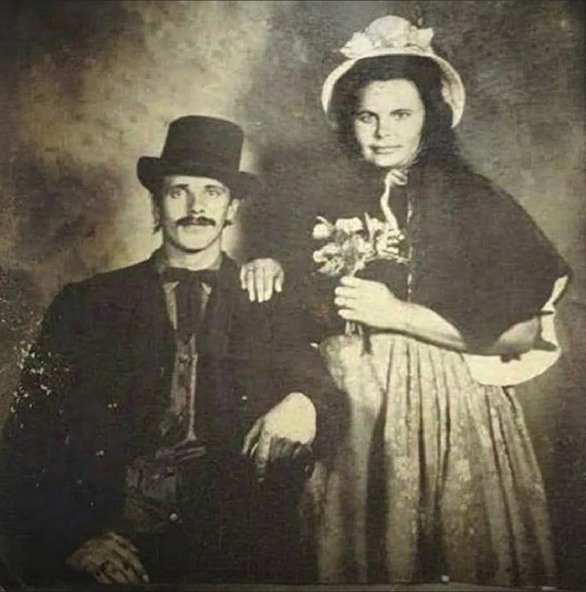

The Inspiration & Legacey
This app stands as a living tribute to my Grandpa, the man who raised me and shaped the person I am today. My fondest memories trace back to winters in Somers, Montana. After the plates were cleared and our own gifts were unwrapped, our entire family—my grandparents, my brothers, and I—would package up food and presents to bring to a family friend. It was a quiet, beautiful tradition rooted in nothing but kindness.
The real magic happened when the house was buzzing with family, the front door would burst open, and there he was: fully dressed as Santa Claus, with one of my brothers by his side as an elf. The room would light up as he pulled cards, candy, and surprises from his classic bag. In those moments, there was a profound sense of safety and peace. Of course he couldn't have pulled off all the Christmas magic without his Mrs Clause, While my Grandpa brought the performance my Grandma was the architect of the magic. She is still with us today keeping that same bright spark alive. It felt like the very definition of home.
The depth of his generosity stayed with me so deeply that, years later, we used his original Santa suit to my mom's house, passing the magic down to the next generation of children. My grandpa never lectured me on how to live; he simply showed me. He lived with a rare humility, a fierce honesty, and a golden rule: say what you mean, and mean what you say. He was the greatest man I’ve ever known. I built this to extend the peace, joy, and genuine care he carried every day to anyone who needs it now. He taught me that people matter, and I want to keep his promise alive.


- 🎄 Cole (Good List)
- ⭐ Gage
- 🎁 Misty
- ❄️ Wyatt